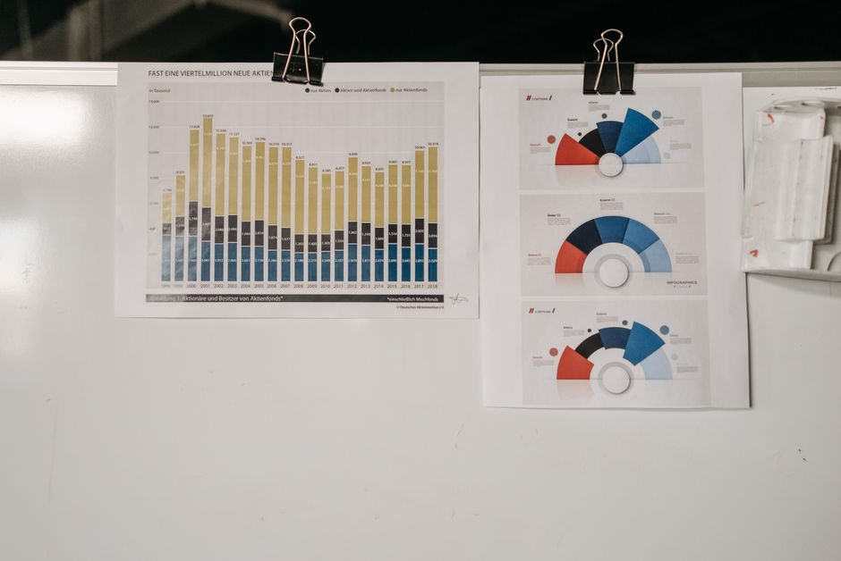

Held-Out Test Sets: How Large Is Large Enough
A single accuracy number from a small test set can look precise while hiding a wide margin of error. Here is how to reason about that margin before you trust it.

The number that looks more certain than it is
A held-out test set exists to answer one question honestly: how will this model behave on data it has never seen. That is a good instinct, but it quietly assumes the test set is large enough for the resulting number to mean something. In practice I see test sets of a few hundred examples reported alongside a single accuracy figure to two decimal places, as if the number were a physical constant rather than an estimate with noise attached to it.
The problem is not that small test sets are useless. It is that the uncertainty around the estimate is rarely reported, and readers, including the person who ran the experiment, tend to treat a point estimate as the truth. Two models scoring 88% and 90% on a three hundred example test set can be statistically indistinguishable, yet one gets shipped and the other gets shelved on the strength of a two point gap that could easily flip on a different random split.
This matters more as models get better. Early in a project, accuracy differences between approaches are often large enough that sample size barely matters; a 65% baseline against an 85% model is obviously a real difference even on a small set. Late in a project, when you are comparing 91.2% against 91.8%, sample size is the whole story.
Working through the arithmetic
Treat each test example as a Bernoulli trial: the model gets it right or wrong. If the true accuracy is p and you evaluate on n independent examples, the standard error of your observed accuracy is roughly the square root of p times (1 minus p) divided by n. For a rough binary classifier sitting around 90% accuracy, p(1-p) is about 0.09.
With n equal to 100, the standard error works out to roughly 0.03, so a 95% confidence interval spans about plus or minus 6 percentage points. An observed 90% could genuinely reflect a true accuracy anywhere from about 84% to 96%. With n equal to 1,000, the standard error shrinks to roughly 0.0095, giving an interval of about plus or minus 1.9 points, so 90% observed sits somewhere between about 88% and 92%. Push n to 10,000 and the interval tightens to roughly plus or minus 0.6 points.
The pattern is the familiar square root law: to halve your margin of error you need four times as much data, not twice. Going from 100 to 1,000 examples buys you a big improvement because you are moving along the steep part of the curve. Going from 10,000 to 40,000 buys you a much smaller absolute gain, even though it is the same fourfold increase in effort. This is why doubling a test set from 200 to 400 examples rarely changes your decision, but growing it from 200 to 5,000 usually does.
The consequence for comparing two models is sharper still. If both models are evaluated on the same 300 examples and score 88% and 90%, the difference of 2 points is smaller than the standard error of either estimate individually. A paired test, such as McNemar's test on the disagreements between the two models, will often tell you there is no evidence the difference is real. Reporting the raw percentages without that check invites a false sense of confidence in whichever number happens to be higher.

Where the real risk hides
Sample size interacts badly with class imbalance and with subgroup analysis. If a dataset is 95% negative and 5% positive, a test set of a thousand examples contains only around fifty positive cases. Any accuracy or F1 score broken down by class is really being estimated from that smaller count, so the confidence interval around your recall on the positive class is far wider than the headline number suggests. I have seen reported recall figures on minority classes that were essentially single estimates from a few dozen examples, dressed up as a stable performance characteristic.
The same shrinkage happens whenever you slice the test set for a fairness check, an error analysis by category, or a comparison across subpopulations. A test set that is comfortably large in aggregate can be dangerously small once you split it into ten subgroups. Before trusting a subgroup number, ask how many examples actually fed into it, not how many are in the full test set.
There is also a subtler risk: a test set can be numerically large but effectively small if its examples are not independent. Sentences drawn from the same document, frames from the same video, or transactions from the same customer are correlated, so the effective sample size is smaller than the raw count suggests, and confidence intervals computed as if each row were independent will be too narrow. This is a leakage problem dressed up as a sample size problem, and it is worth checking the provenance of your test rows before trusting any interval calculation built on top of them.
A practical way to trust the number
Before reporting a test result, work out the confidence interval implied by your test set size, using the simple binomial formula as a starting point even if your final metric is more complex. If the interval is wide enough to swallow the difference you are claiming between models, say so plainly rather than presenting the point estimate as decisive. It costs one extra sentence and saves you from a conclusion that will not replicate.
When comparing models on the same test set, use a paired statistical test rather than eyeballing the gap between two percentages. When reporting subgroup performance, quote the subgroup size next to the metric, because a recall of 100% on eight examples is not evidence of anything. And when a test set is small by necessity, be explicit that the headline number is a rough estimate, not a precise measurement, and consider whether cross-validation or repeated sampling can give a more honest picture of the variance.
None of this requires new tools, just the discipline to ask how many independent examples actually produced the number in front of you. A held-out test set earns trust not from its existence but from its size relative to the claim being made on top of it.
